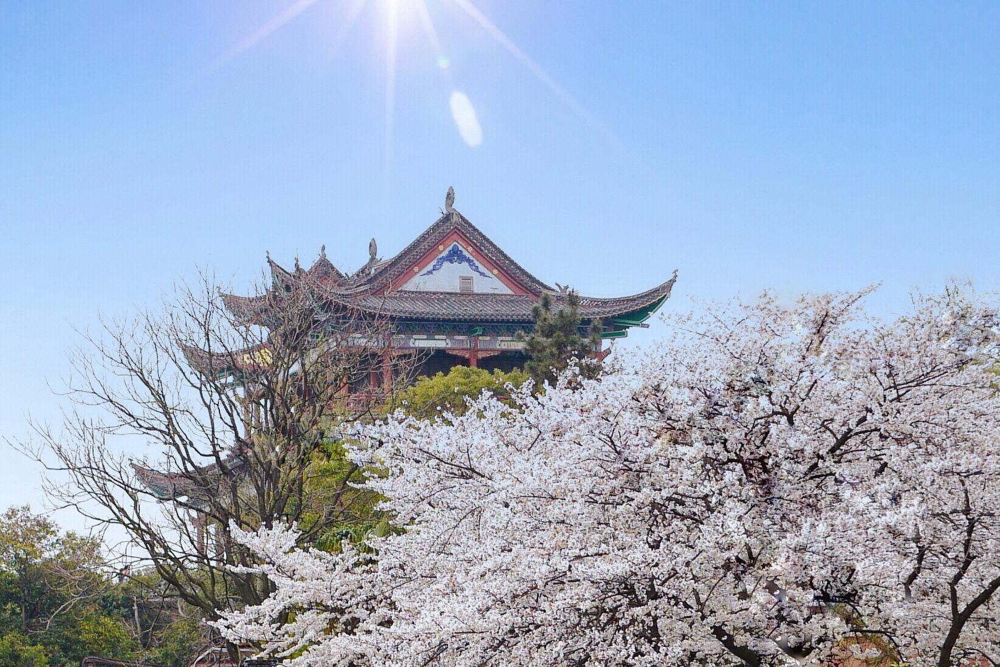

风景名胜
“一桥飞架南北，天堑变通途” 1957年10月15日,武汉长江大桥建成通车，成为新中国成立后在万里长江上修建的第一座公铁两用桥，被誉为“万里长江第一桥”。
武汉长江大桥一经建成，便成为武汉市的标志性建筑，它有效地将武汉三镇连为一体，同时，大桥也将被长江分隔的京汉铁路和粤汉铁路连为一体，从而形成了完整的京广铁路，对促进中国南北经济的发展起到至关重要的作用。
黄鹤楼，位于湖北武汉武昌长江南岸蛇山峰岭之上。始建于三国时代吴黄武二年,历代屡建屡毁,今天看到的黄鹤楼,是1985年重建的。黄鹤楼是国家5A级景点，享有“天下绝景” 、“天下江山第一楼”之称，是武汉的城市地标之一，因唐代诗人崔颢“昔人已乘黄鹤去，此地空余黄鹤楼”的诗句而名扬天下，李白等都为黄鹤楼留下了诗词。登上黄鹤楼远眺，可以看到滚滚长江和武汉三镇风光。
黄鹤楼公园有东门、南门、西门3个入口，东门位于近首义广场一侧，有专门的停车场，停车较方便；南门位于长江大桥武昌侧引桥处，有专门的公交车站，公共交通较方便；西门位于长江大桥上,便于步行游览长江大桥及从户部巷上长江大桥的游客进入。
黄鹤楼位于武汉长江南岸的黄鹤楼公园内，是公园的主体景点，公园和黄鹤楼统一售票。黄鹤楼与岳阳楼、滕王阁并称为"江南三大名楼"。黄鹤楼坐落在蛇山山顶,楼5层,高50余米，72根圆柱拔地而起，60个翘角凌空舒展，恰似黄鹤腾飞。楼内各层布置有大型壁画、文物等。楼外铸铜黄鹤造型、胜像宝塔、牌坊、亭阁等一批辅助建筑。楼面用10多万块黄色琉璃瓦覆盖，在蓝天白云的映衬下，色彩绚丽。
武大和磨山的樱花，盛放时节灿若烟霞，各地游人慕名而至。不论是湖上泛舟还是湖边漫步，都会被秀美的东湖吸引；不论是在桥上还是在船上，都能为两江的夜景沉醉。
